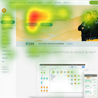
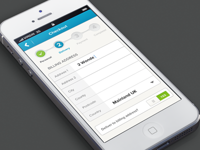

Experience
What have I been up to recently?
-

Wellesley College, 2015
CS111 Teaching Assistant
Learning to code takes a village sometimes. After brushing up on my Python skills, I worked with professors and other teaching assistants to help more than 90 students learn how to code. This meant holding weekly office hours, attending lectures and labs, grading homework assignments, and tutoring certain students one-on-one.
-

North Carolina State University, 2016
Student Research Analyst
This is where I learned how interdisciplinary technology truly is. I spent this particular summer building a video annotation tool for researchers who conduct eye tracking in psychology studies. I presented my findings at the SPLASH 2016 conference in Amsterdam and won first place in the student research competition.
-
Deloitte, 2017
Mobile Analyst Intern
My first foray into the world of mobile development. My pride and glory for the summer was a proof of concept in which I implemented fingerprint authentication for Deloitte's internal expensing app. That work later became part of the company's core mobile framework, so that all Deloitte apps could leverage biometric authentication.
-

Deloitte, 2018-present
Associate Mobile Analyst
I work on a team that conducts alphalabs - smaller, fast-paced, proof-of-concept style experiments. Together, we delve into areas such as automation, authentication, and mobile device management, in an effort to continuously innovate and enhance the daily experiences of our employees.
-
My
Next
Adventure!